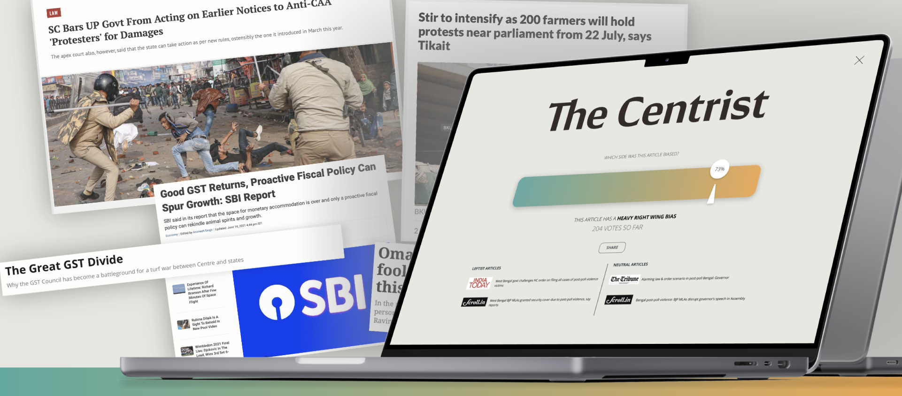
A crowdsourced news classifier to identify bias.
| NLP | Linguistics | News | UX Design | Social Impact | New Media | GPT-3 | News Debates |
The centrist was a project born out of an observation of the deep divide that sat within the country. The political divide out in the world was affecting situations within my extended family.
This issue was highlighted especially well in the case of the Whatsapp debates that often took place, under the guise of the 100+ notifications that would appear. Someone on one side of the family would quote a news source and talk about an event, and the reply to that would generally be someone quoting another side, and it both sides would ridicule each other’s sources.
This issue was highlighted especially well in the case of the Whatsapp debates that often took place, under the guise of the 100+ notifications that would appear. Someone on one side of the family would quote a news source and talk about an event, and the reply to that would generally be someone quoting another side, and it both sides would ridicule each other’s sources.
About: Academic project done under the guidance of Mayukhini Pande and Zubin Savla
Role: Research + Digital Product Design
Timeline: April 2021 - June 2021
Role: Research + Digital Product Design
Timeline: April 2021 - June 2021
Key Learnings
- Understanding Digital news consumption
-
Effects of Footfall based news on news content
-
How social media content algorithm affects polarisation
-
Shortfalls of ML based language Identification
- How debates were conducted and the dynamics of derailing arguments
The battlefield has shifted from fake news to biased news, i.e. news that was inflammatory, clickbait and fear mongering based. Where you get your news from ensures to surround you with what you like hearing so you keep coming back.
The answer to the popular question “What radicalised you?” Is now increasingly becoming the algorithm.
Shared below is a short presentation on the problem

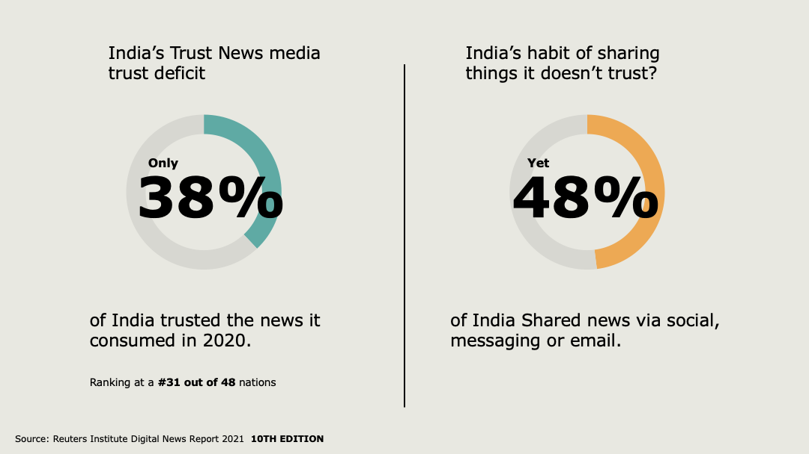


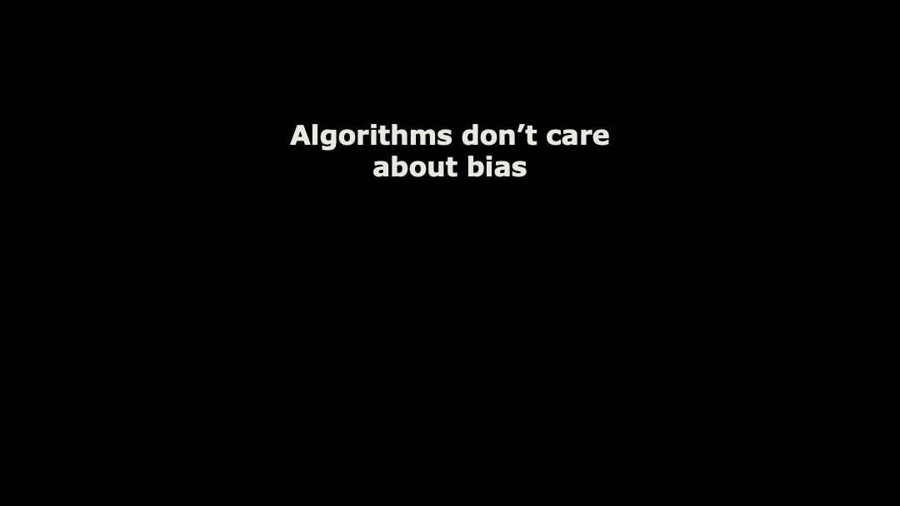
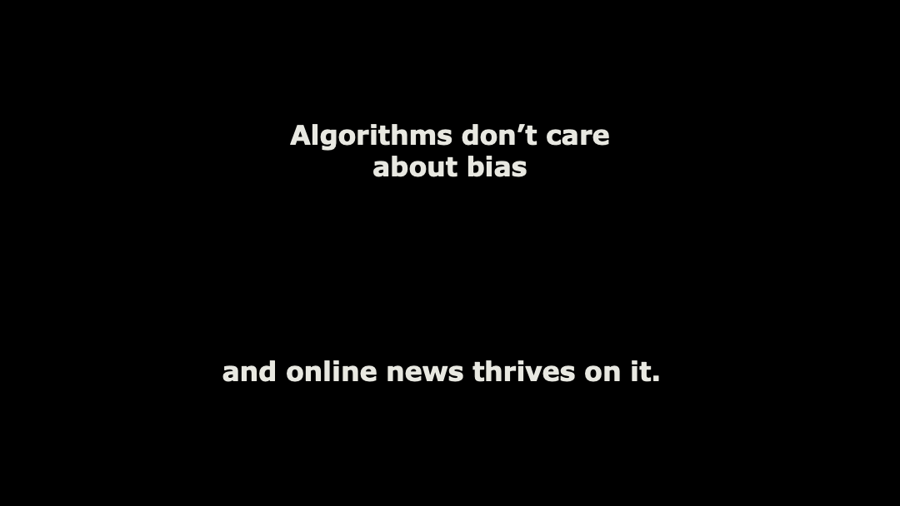
The Solution
How Can we fight the polarisation problem?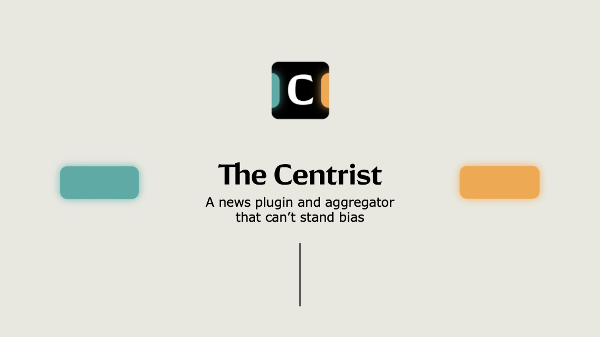
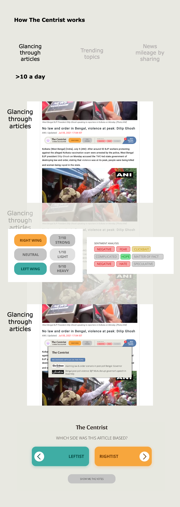


Arriving at the solution
Here’s a quick rundown of how this solution came to be.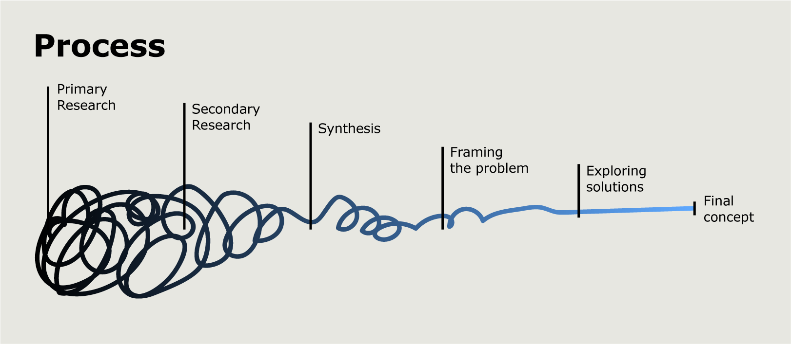
Here, there, everywhere
Immersing myself in the research space I conducted thorough desk research and looked at multiple interviews, lectures and consulted books and reports.
Synthesis
3 aspects to attack
To make sense of all the wild random chaos I tried to insert a order by asking 3 fundamental questions relating to news media.
To make sense of all the wild random chaos I tried to insert a order by asking 3 fundamental questions relating to news media.


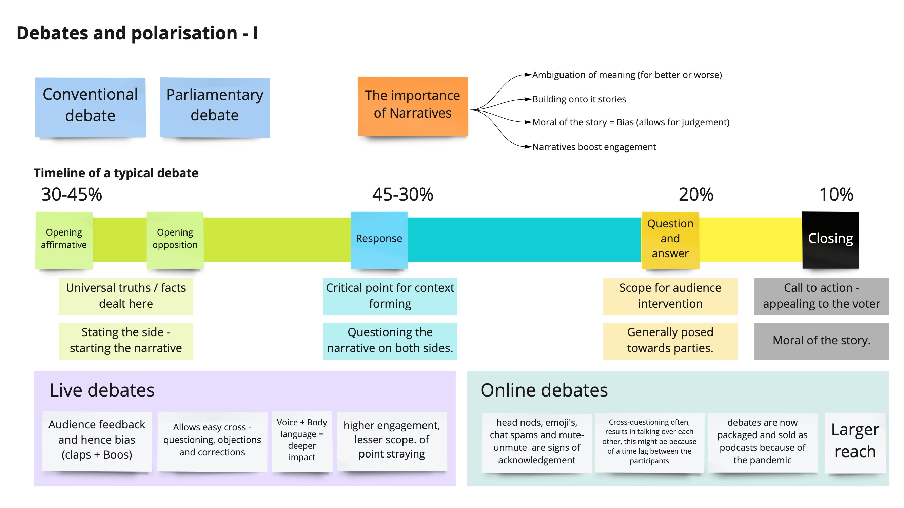
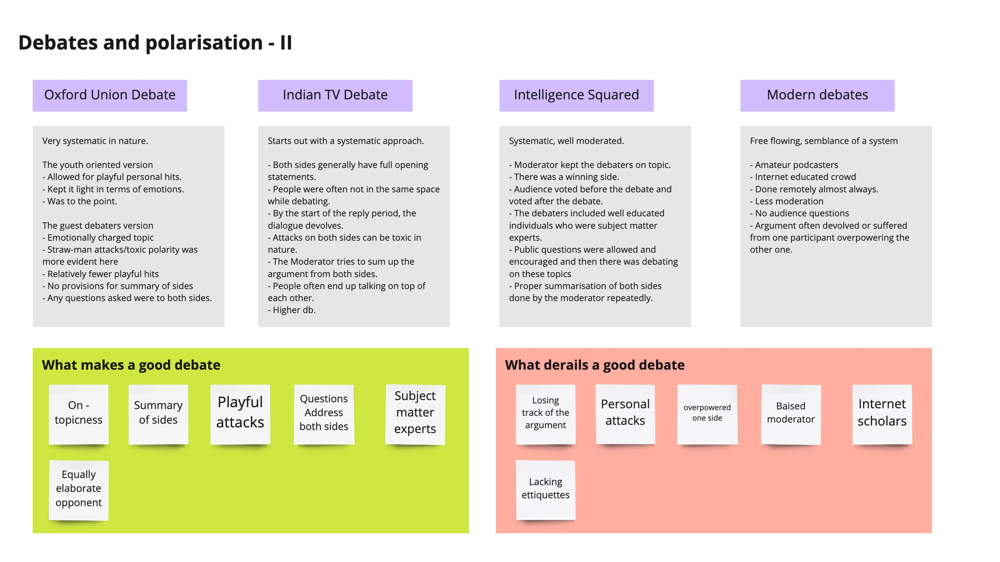
Some of the research breakdown over miro
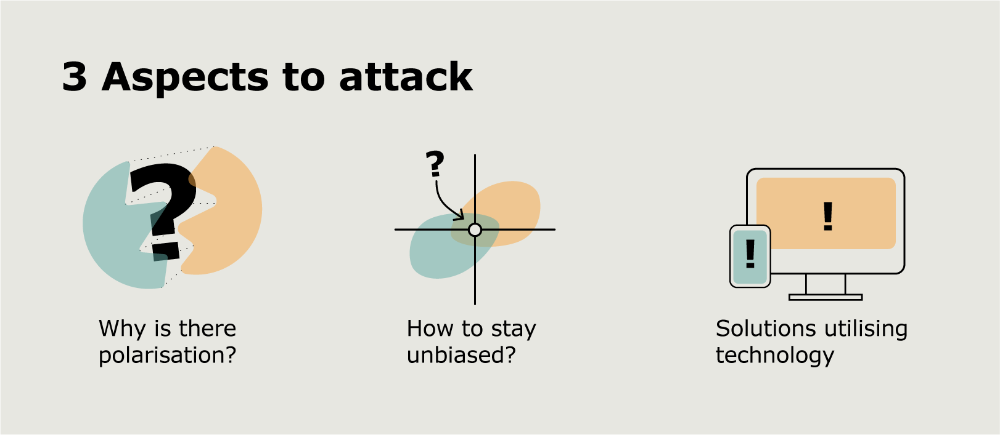
Key findings
Why has polarisation increased
Observing the current way people were interacting with news platforms and social media, the following things became clear.
- Print-based news papers didn’t rely on footfall or traffic
- Relying on traffic forced news portals to write sensational-biased news.
- Identity based polarisation has seen an increase with the rise in tailored feeds
- Cyclic nature of the “NewsFeed” forces similar content onto readers effectively closing them in a green walled garden
How to stay unbiased?
A harder question to answer was how to stay unbiased. Originally, I looked at how debates were conducted and how they were derailed, I looked at how multiple mediums affected the conversation, I looked at what informed opinions.
- Debates and the points they raise have a temporal nature, what seemed left-wing in 1990 is right-wing now.
- Travel, conversation and experience ensured multiple POVs and hence well travelled people were significantly more empathetic
Solutions utilising technology.
A lot of the technology out there has been attacking the immediate evil, i.e. things like Hate speech, Fake news, misinformation, etc. The tech intervention included messaging level apps, news aggregators, and social media apps.
- A level of internet ettiquette was needed to avoid getting hit by sensationalism, for eg. “forwarded many times” was quoted as a reason for the message to be true.
- Banning message boards or sub-reddits would often lead to migration to other similar message boards
- Due to the level of effort needed, fact checkers often failed. Largely becoming or being utilised by news that was quoted by other sources.
- Labeling an article as opinion didn’t help as it was often held at the same level as factual news was.

How might we build a solution that makes a more informed citizen; who is able to identify bias and equip them with tools that help others do the same?
The How might we statement.
Exploring solutions
Before settling on the current solution I explored a couple of ideas, you can glance at the ideas below. The final exploration included a mixture of all of these.


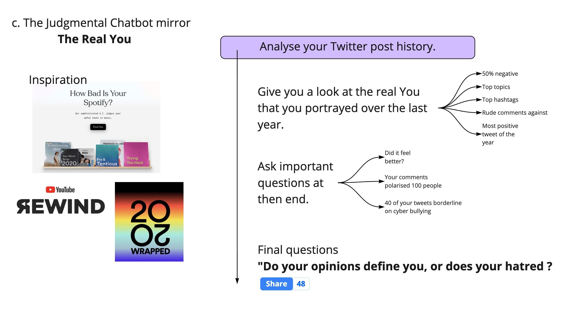
Appendix


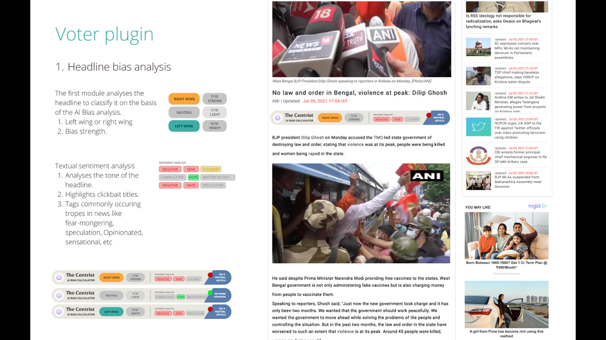
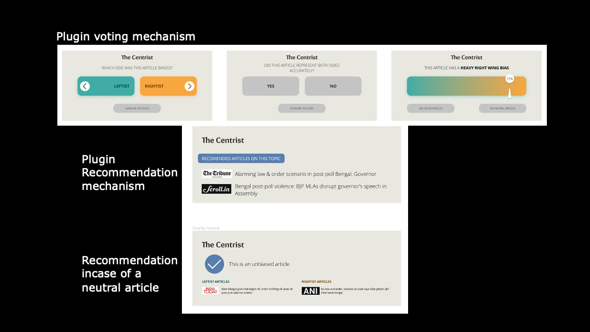

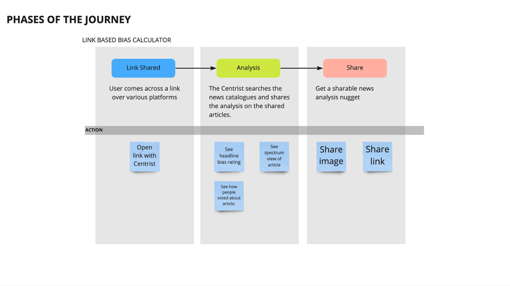
Conclusion
Researching this topic provided me insight into my own biases, the nature of digital news and the algorithm serving me content. I read news a little less now, and like to think I’m a little more equipped at identifying Bias.I am on the look out for similarly minded folks that would like to help me build the centrist engine. If you think you are interested, drop me a mail!
All rights Reserved. 2014 - 2022 | Dhruv Sanjiv Srivastava